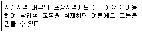
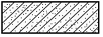
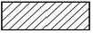
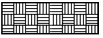
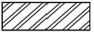
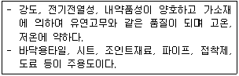
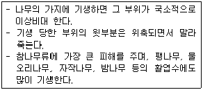
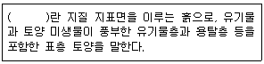
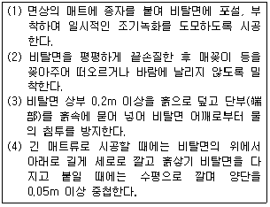
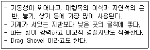

조경기능사 (2016-01-24 기출문제)
1과목: 조경일반
1. 중세 유럽의 조경 형태로 볼 수 없는 것은?
- 과수원
- 약초원
- 공중정원
- 회랑식 정원
(정답률: 68%)

2. 일본 고산수식 정원의 요소와 상징적인 의미가 바르게 연결된 것은?
- 나무 - 폭포
- 연못 - 바다
- 왕모래 - 물
- 바위 - 산봉우리
(정답률: 80%)
3. 다음 중 중국정원의 양식에 가장 많은 영향을 끼친 사상은?
- 선사상
- 신선사상
- 풍수지리사상
- 음양오행사상
(정답률: 86%)
4. 다음 중 서양식 전각과 서양식 정원이 조성되어 있는 우리나라 궁궐은?
- 경복궁
- 창덕궁
- 덕수궁
- 경희궁
(정답률: 78%)
5. 고대 로마의 대표적인 별장이 아닌 것은?
- 빌라 투스카니
- 빌라 감베라이아
- 빌라 라우렌티아나
- 빌라 아드리아누스
(정답률: 60%)
6. 미국 식민지 개척을 통한 유럽 각국의 다양한 사유지 중심의 정원양식이 공공적인 성격으로 전환되는 계기에 영향을 끼친 것은?
- 스토우 정원
- 보르비콩트 정원
- 스투어헤드 정원
- 버컨헤드 공원
(정답률: 69%)
7. 프랑스 평면기하학식 정원을 확립하는데 가장 큰 기여를 한 사람은?
- 르 노트르
- 메이너
- 브리지맨
- 비니올라
(정답률: 86%)
8. 형태와 선이 자유로우며, 자연재료를 사용하여 자연을 모방하거나 축소하여 자연에 가까운 형태로 표현한 정원 양식은?
- 건축식
- 풍경식
- 정형식
- 규칙식
(정답률: 84%)
9. 다음 후원 양식에 대한 설명 중 틀린 것은?
- 한국의 독특한 정원 양식 중 하나이다.
- 괴석이나 세심석 또는 장식을 겸한 굴뚝을 세워 장식하였다.
- 건물 뒤 경사지를 계단모양으로 만들어 장대석을 앉혀 평지를 만들었다.
- 경주 동궁과 월지, 교태전 후원의 아미산원, 남원시 광한루 등에서 찾아볼 수 있다.
(정답률: 73%)
10. 현대 도시환경에서 조경 분야의 역할과 관계가 먼 것은?
- 자연환경의 보호유지
- 자연 훼손지역의 복구
- 기존 대도시의 광역화 유도
- 토지의 경제적이고 기능적인 이용 계획
(정답률: 86%)
11. 다음 설명의 ( )안에 들어갈 시설물은?

- 볼라드(bollard)
- 휀스(fence)
- 벤치(bench)
- 수목 보호대(grating)
(정답률: 77%)
12. 기존의 레크레이션 기회에 참여 또는 소비하고 있는 수요(需要)를 무엇이라 하는가?
- 표출수요
- 잠재수요
- 유효수요
- 유도수요
(정답률: 68%)
13. 주택정원의 시설구분 중 휴게시설에 해당되는 것은?
- 벽천, 폭포
- 미끄럼틀, 조각물
- 정원등, 잔디등
- 퍼걸러, 야외탁자
(정답률: 90%)
14. 조경계획 · 설계에서 기초적인 자료의 수집과 정리 및 여러 가지 조건의 분석과 통합을 실시하는 단계를 무엇이라 하는가?
- 목표 설정
- 현황분석 및 종합
- 기본 계획
- 실시 설계
(정답률: 71%)
15. 다음 『채도대비』에 관한 설명 중 틀린 것은?
- 무채색끼리는 채도 대비가 일어나지 않는다.
- 채도대비는 명도대비와 같은 방식으로 일어난다.
- 고채도의 색은 무채색과 함께 배색하면 더 선명해 보인다.
- 중간색을 그 색과 색상은 동일하고 명도가 밝은 색과 함께 사용하면 훨씬 선명해 보인다.
(정답률: 55%)
2과목: 조경재료
16. 좌우로 시선이 제한되어 일정한 지점으로 시선이 모이도록 구성하는 경관 요소는?
- 전망
- 통경선(Vista)
- 랜드마크
- 질감
(정답률: 84%)
17. 조경 시공 재료의 기호 중 벽돌에 해당하는 것은?




(정답률: 68%)
18. 다음 중 곡선의 느낌으로 가장 부적합한 것은?
- 온건하다.
- 부드럽다.
- 모호하다.
- 단호하다.
(정답률: 84%)
19. 모든 설계에서 가장 기본적인 도면은?
- 입면도
- 단면도
- 평면도
- 상세도
(정답률: 87%)
20. 조경 실시설계 단계 중 용어의 설명이 틀린 것은?
- 시공에 관하여 도면에 표시하기 어려운 사항을 글로 작성한 것을 시방서라고 한다.
- 공사비를 체계적으로 정확한 근거에 의하여 산출한 서류를 내역서라고 한다.
- 일반관리비는 단위 작업당 소요인원을 구하여 일당 또는 월급여로 곱하여 얻어진다.
- 공사에 소요되는 자재의 수량, 품 또는 기계 사용량 등을 산출하여 공사에 소요되는 비용을 계산한 것을 적산이라고 한다.
(정답률: 78%)
21. 석재의 성인(成因)에 의한 분류 중 변성암에 해당되는 것은?
- 대리석
- 섬록암
- 현무암
- 화강암
(정답률: 75%)
22. 레미콘 규격이 25 - 210 - 12로 표시되어 있다면 ⓐ - ⓑ - ⓒ 순서대로 의미가 맞는 것은?
- ⓐ 슬럼프, ⓑ 골재최대치수, ⓒ 시멘트의 양
- ⓐ 물·시멘트비, ⓑ 압축강도, ⓒ 골재최대치수
- ⓐ 골재최대치수, ⓑ 압축강도, ⓒ 슬럼프
- ⓐ 물·시멘트비, ⓑ 시멘트의 양, ⓒ 골재최대치수
(정답률: 66%)
23. 다음 설명에 적합한 열가소성수지는?

- 페놀수지
- 염화비닐수지
- 멜라민수지
- 에폭시수지
(정답률: 60%)
24. 인공 폭포, 수목 보호판을 만드는데 가장 많이 이용되는 제품은?
- 유리블록제품
- 식생호안블록
- 콘크리트격자블록
- 유리섬유강화플라스틱
(정답률: 85%)
25. 알루미나 시멘트의 최대 특징으로 옳은 것은?
- 값이 싸다.
- 조기강도가 크다.
- 원료가 풍부하다.
- 타 시멘트와 혼합이 용이하다.
(정답률: 80%)
26. 다음 중 목재의 장점에 해당하지 않는 것은?
- 가볍다.
- 무늬가 아름답다.
- 열전도율이 낮다.
- 습기를 흡수하면 변형이 잘 된다.
(정답률: 79%)
27. 다음 금속 재료에 대한 설명으로 틀린 것은?
- 저탄소강은 탄소함유량이 0.3% 이하이다.
- 강판, 형강, 봉강 등은 압연식 제조법에 의해 제조된다.
- 구리에 아연 40%를 첨가하여 제조한 합금을 청동이라고 한다.
- 강의 제조방법에는 평로법, 전로법, 전기로법, 도가니법 등이 있다.
(정답률: 73%)
28. 다음 조경시설 소재 중 도로 절·성토면의 녹화공사, 해안매립 및 호안공사, 하천제방 및 급류 부위의 법면보호공사 등에 사용되는 코코넛 열매를 원료로 한 천연섬유 재료는?
- 코이어 메시
- 우드칩
- 테라소브
- 그린블록
(정답률: 76%)
29. 견치식에 관한 설명 중 옳지 않은 것은?
- 형상은 재두각추체(裁頭角錐體)에 가깝다.
- 접촉면의 길이는 앞면 4변의 제일 짧은 길이의 3배 이상이어야 한다.
- 접촉면의 폭은 전면 1변의 길이의 1/10 이상이어야 한다.
- 견치석은 흙막이용 석축이나 비탈면의 돌붙임에 쓰인다.
(정답률: 53%)
30. 무근콘크리트와 비교한 철근콘크리트의 특성으로 옳은 것은?
- 공사기간이 짧다.
- 유지관리비가 적게 소요된다.
- 철근 사용의 주목적은 압축강도 보완이다.
- 가설공사인 거푸집 공사가 필요 없고 시공이 간단하다.
(정답률: 54%)
31. 『Syringa oblata var.dilatata』는 어떤 식물인가?
- 라일락
- 목서
- 수수꽃다리
- 쥐똥나무
(정답률: 69%)
32. 다음 중 수관의 형태가 “원추형”인 수종은?
- 전나무
- 실편백
- 녹나무
- 산수유
(정답률: 72%)
33. 다음 중 인동덩굴(Lonicera japonica Thunb.)에 대한 설명으로 옳지 않은 것은?
- 반상록 활엽 덩굴성
- 원산지는 한국, 중국, 일본
- 꽃은 1~2개씩 옆액에 달리며 포는 난형으로 길이는 1~2㎝
- 줄기가 왼쪽으로 감아 올라가며, 소지는 회색으로 가시가 있고 속이 빔
(정답률: 72%)
34. 서향(Daphne odora Thunb.)에 대한 설명으로 맞지 않는 것은?
- 꽃은 청색계열이다.
- 성상은 상록활엽관목이다.
- 뿌리는 천근성이고 내염성이 강하다.
- 잎은 어긋나기하며 타원형이고, 가장자리가 밋밋하다.
(정답률: 57%)
35. 팥배나무(Sorbus alnifolia K.Koch)의 설명으로 틀린 것은?
- 꽃은 노란색이다.
- 생장속도는 비교적 빠르다.
- 열매는 조류 유인식물로 좋다.
- 잎의 가장자리에 이중거치가 있다.
(정답률: 69%)
3과목: 조경 시공 및 관리
36. 골담초(Caragana sinica Rehder)에 대한 설명으로 틀린 것은?
- 콩과(科) 식물이다.
- 꽃은 5월에 피고 단생한다.
- 생장이 느리고 덩이뿌리로 위로 자란다.
- 비옥한 사질양토에서 잘 자라고 토박지에서도 잘 자란다.
(정답률: 60%)
37. 다음 중 조경수의 이식에 대한 적응이 가장 어려운 수종은?
- 편백
- 미루나무
- 수양버들
- 일본잎갈나무
(정답률: 67%)
38. 방풍림(wind shelter) 조성에 알맞은 수종은?
- 팽나무, 녹나무, 느티나무
- 곰솔, 대나무류, 자작나무
- 신갈나무, 졸참나무, 향나무
- 박달나무, 가문비나무, 아까시나무
(정답률: 56%)
39. 조경 수목은 식재기의 위치나 환경조건 등에 따라 적절히 선정하여야 한다. 다음 중 수목의 구비조건으로 가장 거리가 먼 것은?
- 병충해에 대한 저항성이 강해야 한다.
- 다듬기 작업 등 유지관리가 용이해야 한다.
- 이식이 용이하며, 이식 후에도 잘 자라야 한다.
- 번식이 힘들고 다량으로 구입이 어려워야 희소성 때문에 가치가 있다.
(정답률: 88%)
40. 미선나무(Abeliophyllum distichum Nakai)의 설명으로 틀린 것은?
- 1속 1종
- 낙엽활엽관목
- 잎은 어긋나기
- 물푸레나무과(科)
(정답률: 61%)
41. 농약제제의 분류 중 분제(粉劑, dusts)에 대한 설명으로 틀린 것은?
- 잔효성이 유제에 비해 짧다.
- 작물에 대한 고착성이 우수하다.
- 유효성분 농도가 1 ~ 5% 정도인 것이 많다.
- 유효성분을 고체증량제와 소량의 보조제를 혼합 분쇄한 미분말을 말한다.
(정답률: 59%)
42. 다음 중 철쭉, 개나리 등 화목류의 전정시기로 가장 알맞은 것은?
- 가을 낙엽 후 실시한다.
- 꽃이 진 후에 실시한다.
- 이른 봄 해동 후 바로 실시한다.
- 시기와 상관없이 실시할 수 있다.
(정답률: 83%)
43. 양버즘나무(플라타너스)에 발생된 흰불나방을 구제하고자 할 때 가장 효과가 좋은 약제는?
- 디플루벤주론수화제
- 결정석회황합제
- 포스파미돈액제
- 티오파네이트메틸수화제
(정답률: 61%)
44. 조경수목에 공급하는 속효성 비료에 대한 설명으로 틀린 것은?
- 대부분의 화학비료가 해당된다.
- 늦가을에서 이른 봄 사이에 준다.
- 시비 후 5 ~ 7일 정도면 바로 비효가 나타난다.
- 강우가 많은 지역과 잦은 시기에는 유실정도가 빠르다.
(정답률: 65%)
45. 잔디공사 중 떼심기 작업의 주의사항이 아닌 것은?
- 뗏장의 이음새에는 흙을 충분히 채워준다.
- 관수를 충분히 하여 흙과 밀착되도록 한다.
- 경사면의 시공은 위쪽에서 아래쪽으로 작업한다.
- 땟장을 붙인 다음에 롤러 등의 장비로 전압을 실시한다.
(정답률: 82%)
46. 다음 설명에 해당하는 것은?

- 새삼
- 선충
- 겨우살이
- 바이러스
(정답률: 77%)
47. 천적을 이용해 해충을 방제하는 방법은?
- 생물적 방제
- 화학적 방제
- 물리적 방제
- 임업적 방제
(정답률: 86%)
48. 곰팡이가 식물에 침입하는 방법은 직접침입, 연개구로 침입, 상처침입으로 구분할 수 있다. 다음 중 직접침입이 아닌 것은?
- 피목침입
- 흡기로 침입
- 세포간 균사로 침입
- 흡기를 가진 세포간 균사로 침입
(정답률: 55%)
49. 비탈면의 잔디를 기계로 깎으려면 비탈면의 경사가 어느 정도보다 완만하여야 하는가?
- 1:1보다 완만해야한다.
- 1:2보다 완만해야한다.
- 1:3보다 완만해야한다.
- 경사에 상관없다.
(정답률: 66%)
50. 수목 식재 후 물집을 만드는데, 물집의 크기로 가장 적당한 것은?
- 근원지름(직경)의 1배
- 근원지름(직경)의 2배
- 근원지름(직경)의 3~4배
- 근원지름(직경)의 5~6배
(정답률: 61%)
51. 토공사에서 터파기할 양이 100m3, 되메우기양이 70m3일 때 실질적인 잔토처리량(m3)은? (단, L = 1.1, C = 0.8이다.)
- 24
- 30
- 33
- 39
(정답률: 68%)
52. 다음 설명의 ( )안에 적합한 것은?

- 표토
- 조류(algae)
- 풍적토
- 충적토
(정답률: 85%)
53. 조경시설물 유지관리 연관 작업계획에 포함되지 않는 작업 내용은?
- 수선, 교체
- 개량, 신설
- 복구, 방제
- 제초, 전정
(정답률: 57%)
54. 건설공사 표준품셈에서 사용되는 기본(표준형) 벽돌의 표준 치수(㎜)로 옳은 것은?
- 180×80×57
- 190×90×57
- 210×90×60
- 210×100×60
(정답률: 84%)
55. 다음 설명에 해당하는 공법은?

- 식생대공
- 식생자루공
- 식생매트공
- 종자분사파종공
(정답률: 78%)
56. 수준측량에서 표고(標高 : elevation)라 함은 일반적으로 어느 면(面)으로부터 연직거리를 말하는가?
- 해면(海面)
- 기준면(基準面)
- 수평면(水平面)
- 지평면(地平面)
(정답률: 67%)
57. 다음 중 콘크리트의 공사에 있어서 거푸집에 작용하는 콘크리트 측압의 증가 요인이 아닌 것은?
- 타설 속도가 빠를수록
- 슬럼프가 클수록
- 다짐이 많을수록
- 빈배합일 경우
(정답률: 75%)
58. 다음 중 현장 답사 등과 같은 높은 정확도를 요하지 않는 경우에 간단히 거리를 측정하는 약측정 방법에 해당하지 않는 것은?
- 목측
- 보측
- 시각법
- 줄자측정
(정답률: 76%)
59. 다음 [보기]가 설명하는 특징의 건설장비는?

- 로더(Loader)
- 백호우(Back Hoe)
- 불도저(Bulldozer)
- 덤프트럭(Dump Truck)
(정답률: 82%)
60. 토양환경을 개선하기 위해 유공관을 지면과 수직으로 뿌리 주변에 세워 토양내 공기를 공급하여 뿌리호흡을 유도하는데, 유공관의 깊이는 수종, 규격, 식재지역의 토양 상태에 따라 다르게 할 수 있으나, 평균 깊이는 몇 미터 이내로 하는 것이 바람직한가?
- 1m
- 1.5m
- 2m
- 3m
(정답률: 63%)